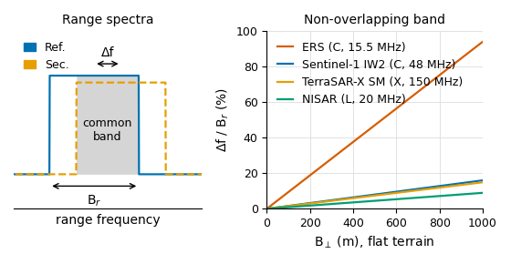
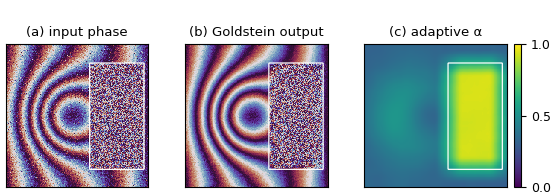

| SAR Concepts: Interferogram Formation and Phase Filtering | |
Between a coregistered SLC stack and an interferogram ready for unwrapping lie several steps: removing the reference phase, optional spectral filtering, multilooking and phase filtering. Each trades resolution for phase quality and changes what the phase and the coherence mean; order and settings decide whether the result can be trusted.
The interferogram is the Reference times the complex conjugate of the Secondary, with phase φ = (4π/λ)(Rsec − Rref); InSAR Fundamentals lists the terms it contains. Most raw fringes are the flat-Earth phase, the phase the ellipsoid alone would produce. The look angle changes across the swath, so for a fixed baseline the range difference changes steadily across the swath, at a rate
|dφflat/dR| = 4π B⊥ / (λ R tan θ)
where B⊥ is the perpendicular baseline, R the slant range and θ the incidence angle; Earth curvature modifies this only slightly. For Sentinel-1 IW (λ = 5.55 cm, R ≈ 865 km, θ ≈ 39°) each 100 m of B⊥ gives about 5 fringes per km of slant range, one every 80 or so range pixels. The flat-Earth phase is computed from the orbits and removed first; the topographic phase is then simulated from a DEM and subtracted. Deformation, atmosphere, orbit and DEM errors, and noise remain.
The two look angles map the ground to slightly different range frequencies. The range spectra of Reference and Secondary are shifted against each other by (Gatelli et al., 1994)
Δf = −f0 B⊥ / (R tan(θ − ζ))
where f0 is the carrier frequency and ζ the terrain slope in range, positive for slopes facing the radar; the sign only says which spectrum lies higher. Only the overlap is correlated (Figure 1). On flat terrain the geometric coherence falls roughly as 1 − |Δf|/Br, with Br the range bandwidth, reaching zero at the critical baseline (Zebker and Villasenor, 1992). Foreslopes increase |Δf|, without limit as ζ approaches θ. On flat terrain Δf equals the flat-Earth fringe rate expressed as a range frequency, so it can be estimated from the interferogram itself.

Figure 1. Left: the range spectra of Reference and Secondary are shifted by Δf; only the shaded common band is correlated. Right: Δf/Br versus B⊥ on flat terrain, computed with the inputs of Table 1. ALOS-2 lies just below NISAR and is not drawn.
| Mission (mode) | f0 | Br | R, θ | Δf per 100 m B⊥ | Δf/Br, flat | Δf/Br, 15° foreslope |
|---|---|---|---|---|---|---|
| ERS (for comparison) | 5.30 GHz | 15.55 MHz | 853 km, 23° | 1.46 MHz | 9.4 % | 28 % |
| Sentinel-1 (IW2) | 5.405 GHz | 48.2 MHz | 865 km, 39° | 0.77 MHz | 1.6 % | 2.9 % |
| TerraSAR-X (StripMap) | 9.65 GHz | 150 MHz (100 MHz in far-range beams) | 616 km, 35° | 2.24 MHz | 1.5 % | 2.9 % |
| ALOS-2 (StripMap Ultrafine) | 1.2575 GHz | 84 MHz | 750 km, 35° | 0.24 MHz | 0.3 % | 0.5 % |
| NISAR (L-band, 20 MHz) | 1.229 GHz | 20 MHz | 909 km, 37° | 0.18 MHz | 0.9 % | 1.7 % |
Table 1. Range spectral shift per 100 m of perpendicular baseline at mid-swath. Scale linearly for other baselines; L-band pairs often have B⊥ of several hundred metres or more.
Range filtering cuts both spectra down to the common band. It pays off when |Δf| is a sizeable fraction of Br: ERS-era pairs, long baselines, steep foreslopes. For Sentinel-1 small-baseline stacks the loss is a percent or two: little gain, lost range resolution. Azimuth filtering does the same for the azimuth spectra, centred on each image's Doppler centroid: a difference ΔfDC leaves a fraction |ΔfDC|/Baz of the azimuth bandwidth unshared. If the centroids in the metadata differ by only a few percent of Baz, skip it.
TOPS. Within a TOPS burst the azimuth spectrum sweeps across several kilohertz (see TOPS), so a filter that assumes one Doppler centroid per image does not fit. Back-Geocoding deramps the bursts before resampling, and Sentinel-1 keeps repeat-pass bursts synchronised to a few milliseconds, so their azimuth spectra largely overlap. Azimuth Filter is not for TOPS data.
Multilooking averages the complex interferogram over N pixels and takes the phase. Averaging phase values is wrong because the phase wraps: the mean of +3.1 and −3.1 rad is 0, not π. Fringes inside the cell partly cancel, so remove the flat-Earth phase (and, in steep terrain, the topographic phase) first. For N independent looks the phase noise approaches the Cramér-Rao bound (Bamler and Hartl, 1998; Hanssen, 2001)
σφ ≈ √(1 − γ2) / (γ √(2N))
with γ the coherence: about 0.27 rad (16°) for γ = 0.5 and 20 looks. Choose looks that give roughly square ground cells. For Sentinel-1 IW (about 3.7 m ground range by 14 m azimuth), 4 × 1 looks give about 15 m × 14 m and 20 × 5 about 74 m × 70 m. Averaging the coherence band keeps its estimator bias (see Coherence); use a matching window instead.
The Goldstein filter (Goldstein and Werner, 1998) cuts the interferogram into overlapping blocks, computes the 2-D spectrum Z(u, v) of each, and weights it by its own smoothed magnitude:
Zfilt(u, v) = Z(u, v) · [ S{|Z(u, v)|} ]α
S{·} is a small smoothing window and the exponent α, from 0 (no change) to 1 (strong), sets the strength. Dominant local fringe frequencies are kept and broadband noise is suppressed, so even dense fringes survive. Baran et al. (2003) tied the strength to coherence, α = 1 − mean(γ) over the patch (SNAP: the whole FFT block): noisy blocks are filtered strongly, coherent ones lightly.

Figure 2. Simulated 4-look interferogram with coherence 0.7 and a decorrelated patch (white outline). (a) Input phase. (b) After Goldstein filtering as SNAP does it (adaptive α, quarter-block steps), with 32 × 32 blocks for this small image: the phase error in the coherent area drops from 0.49 to 0.18 rad. Inside the patch the output is still noise, but along its edge the filter carries the neighbouring fringes a few pixels into it. (c) The exponent: about 0.4 in the coherent area (the estimated coherence there is about 0.6, lowered by fringes inside the estimation window), 0.9 in the patch.
Filtering alters the phase and correlates neighbouring pixels. Use the filtered phase for display and unwrapping, where fewer residues help (see Phase Unwrapping), but estimate coherence from unfiltered data. Do not feed filtered pairs into a time-series inversion unless the method expects it: each pair is filtered differently, which adds closure errors.
fep_<tag> and (with topographic subtraction on) topo_<tag>. coh is estimated
from the full-resolution SLCs after flat-Earth (and, if selected, topographic) removal;
Coherence Window (m) makes its window square on the ground. GSLC stacks
are processed on the map grid; a stack of phase-flattened GSLCs is not flattened again, and a stack mixing
flattened and natural-phase GSLCs is refused (see GSLC).i_ifg/q_ifg bands with a virtual
Phase_ifg_srd_<pol>_<dates> (no subswath), and copies coh through
unchanged. For coherence free of topographic fringes, select Subtract topographic phase in
Interferogram instead.i and
q (a complex average) and recreates the virtual phase band. A Phase band you
select yourself is averaged as plain numbers; coh is averaged too.coh passes through unfiltered. Use coherence mask (off; threshold 0.2) restores the unfiltered values of
low-coherence pixels; no-data coherence does not trigger it.Phase band instead of i/q. Wrapped phase averages
wrongly near ±π.